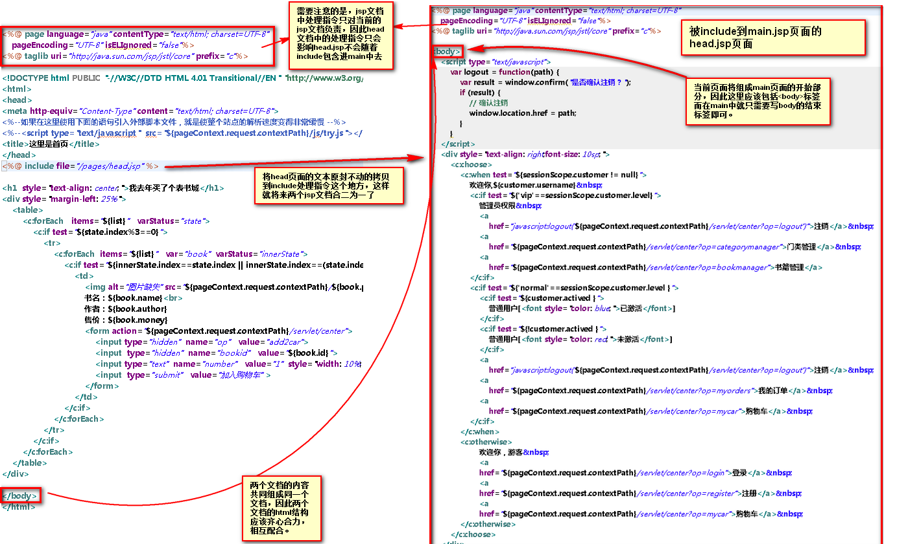

include我的理解就是将多个jsp或html文档包含到同一个html中的技术，通常用于制作网页框架，其功能李思雨HTML中的Frameset标签的作用。
通常包含的方式分为动态包含和静态包含两种，其中绝大多数为静态包含，只有通过requst.getRequestDispatcher().include()是动态包含。
<%@ include file="/pages/head.jsp" %> 与page、taglib这两处理指令不同的是，include处理指令k可以出现在需要出现的位置，具体形式的示例代码如下所示，这段代码将head.jsp的页面包含进了main.jsp中使用include处理指令的地方了，由此可见include类似于起到了占位符的作用。
